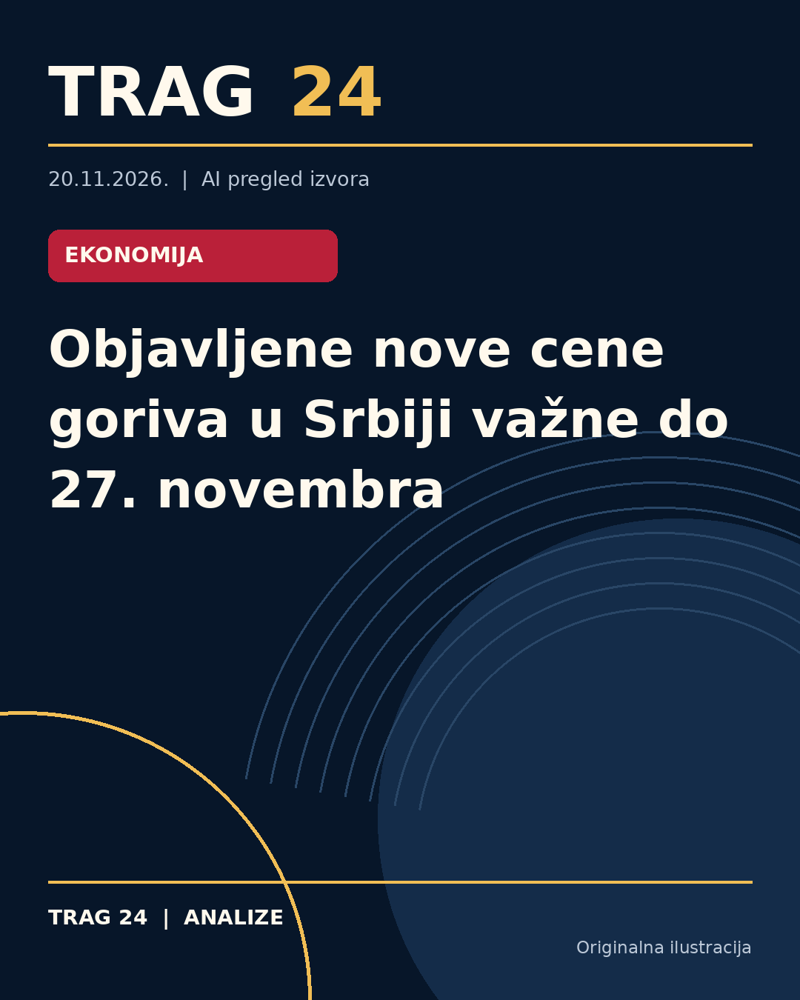

Objavljene nove cene goriva u Srbiji važne do 27. novembra

ŠTA SE DOGODILO
Vlada Srbije je objavila nove maksimalne cene goriva koje će važiti od 15 časova 20. novembra do 15 časova 27. novembra 2026. godine. Cene evrodizela i evropremijum benzina BMB 95 ostaju fiksirane na nivou koji je određen u skladu sa važećom uredbom o ograničenju visine cena derivata nafte.
HRONOLOGIJA
Prošle nedelje litar evrodizela koštao je 236 dinara, dok je cena benzina iznosila 207 dinara. Novi cenovnik objavljen je u petak 20. novembra i važi do petka 27. novembra. Dok je cena dizela ostala nepromenjena, cena benzina je spuštena za tri dinara po litru. Odluka o ograničenju cena usvojena je u skladu sa članom 3. stav 4. Uredbe Vlade Srbije, a primena novih cena je obavezna odmah po objavljivanju na zvaničnoj internet stranici Ministarstva unutrašnje i spoljne trgovine.
ŠTA NAVODE IZVORI
Izvor Danas navodi da je cena evrodizela ostala ista na 236 dinara po litru, dok je cena benzina spuštena sa 207 na 204 dinara po litru. Izvor Insajder potvrđuje te cene i rok važenja, ističući da su utvrđene odlukom Vlade Srbije i da su obavezne za privredne subjekte koji trguju gorivom. Oba izvora se slažu u podacima o cenama i periodu njihove primene, kao i da su cene određene na osnovu postojeće uredbe o ograničenju cena derivata.
ŠTA JE POTVRĐENO
Potvrđeno je da litar evrodizela košta maksimalno 236 dinara, dok je evropremijum benzin BMB 95 u prodaji za 204 dinara po litru. Cena dizela je nepromenjena u odnosu na prethodni period, dok je cena benzina smanjena za tri dinara. Nove cene važe u periodu od 20. do 27. novembra 2026. godine. Takođe, potvrđeno je da primena ovih cena u maloprodaji mora biti sprovedena odmah po objavljivanju okvira na zvaničnim kanalima Vlade i Ministarstva unutrašnje i spoljne trgovine.
ŠTA NIJE POTVRĐENO
Nije potvrđeno da li će nakon isteka ovog perioda uslediti nova korekcija cena ili da li postoje planovi za dodatne promene akciza na gorivo. Takođe, informacije o mogućim dugoročnim posledicama ovih cena na tržište goriva nisu dostupne u dostavljenim tekstovima.
ŠTA OSTАJE OTVORENO: Ostaje otvoreno pitanje uticaja ove uredbe i cena na potrošače u narednom periodu, kao i eventualne promene cena po isteku aktuelnog roka. Nije poznato niti iz ovih izvora dostavljeno da li će biti dodatnih mera ili prilagođavanja cena u vezi sa promenama na međunarodnom tržištu nafte ili unutrašnjim ekonomskim uslovima.
Izvori
- https://www.danas.rs/vesti/ekonomija/objavljene-nove-cene-goriva-koje-ce-vaziti-do-27-novembra/
- https://insajder.net/prenosimo/ministarstvo-unutrasnje-i-spoljne-trgovine-objavilo-nove-cene-goriva-za-narednih-sedam-dana
Ova analiza je pripremljena uz pomoć veštačke inteligencije na osnovu javno dostupnih izvora. Navodi izvora nisu nužno nezavisno potvrđeni.